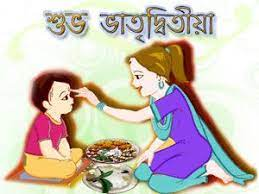
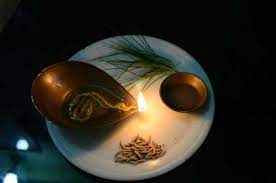
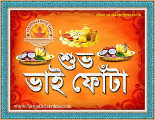

|  |
Bhai Dooj, Bhaubeej, Bhai Tika, Bhai Phonta is a festival celebrated by Hindus on the second lunar day of Shukla Paksha (bright fortnight) in the Vikram Samvat Hindu calendar or of Shalivahan Shaka calendar month of Kartika. It is celebrated during the Diwali or Tihar festival and Holi festival. The celebrations of this day are similar to the festival of Raksha Bandhan. On this day, sisters give gifts to their brothers. In the southern part of the country, the day is celebrated as Yama Dwitiya.[3] In the Kayastha community, two Bhai Doojs are celebrated. The more famous one comes on the second day after Diwali. But the lesser-known one is celebrated a day or two after Diwali. In Haryana, a ritual also followed, a dry coconut (named gola in regional language) with klewa tied along its width for worshipping is also used at the time of doing aarti of a brother.[4] |
On the day of the festival, sisters invite their brothers for a sumptuous meal often including their favourite dishes/sweets. The procedure may be different in Bihar and central India. The whole ceremony signifies the duty of a brother to protect his sister, as well as a sister's blessings for her brother.[7] Carrying forward the ceremony in traditional style, sisters perform arti for their brother and apply a red tika on the brother's forehead. This tika ceremony on the occasion of Bhai Bij signifies the sister's sincerest prayers for the long and happy life of her brother and treat them with gifts. In return, elder brothers bless their sisters and may treat them also with gifts or cash. As it is customary in Haryana, Maharashtra to celebrate the auspicious occasion of Bhau-beej, women who do not have a brother worship the moon Chandra instead. They apply mehendi on girls as their tradition. |
 |
|  |
Bhai Phonta in West Bengal is celebrated with much splendour. The ceremony is marked with many rituals along with a grand feast arranged for the brothers. It is necessary that, both brother and sister are more than 5 years of age.[8] The festival of Bhai Bij is popular in Haryana, Gujarat, Maharashtra and Goa and is celebrated with great fervour and gaiety. Brothers and sisters look forward to the occasion with immense enthusiasm. To add charm to the occasion, Bhai Bij gifts are given to brothers from sisters as a token of love and appreciation. Bhav Bij is a time for family reunions as all brothers and sisters in the family get together. Close relatives and friends are also invited to celebrate the Bhav Bij in many families. Special dishes for the festival include the Maharashtra sweet called basundi poori or kheerni poori. On this occasion sisters give gifts to their brothers. |